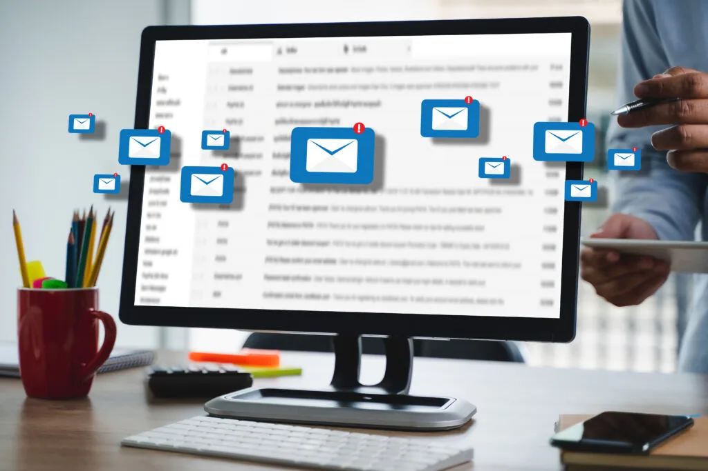

Email marketing is one of the most effective ways to reach out to your target audience and drive conversions. However, it is essential to follow certain dos and don’ts to ensure that your email campaigns are successful. In this guide, we will walk you through the 12 most important dos and don’ts of email marketing.
Dos of Email Marketing

- Do Segment Your Email List Segmenting your email list is crucial to ensure that your subscribers receive relevant content. By categorizing your subscribers based on their interests, behavior, and demographics, you can send them targeted emails that are more likely to convert.
- Do Personalize Your Emails Personalization is key to building relationships with your subscribers. Addressing them by their name and sending them personalized content can help you establish trust and boost engagement.
- Do Optimize Your Email Subject Lines Your email subject line is the first thing that your subscribers see in their inbox. Therefore, it is crucial to craft subject lines that are engaging and entice your subscribers to open your emails.
- Do Provide Valuable Content Your subscribers are more likely to engage with your emails if you provide them with valuable content. This can include informative blog posts, educational videos, or exclusive offers.
- Do Test Your Emails A/B testing your emails can help you determine what works best for your subscribers. By testing different subject lines, call-to-actions, and content, you can optimize your email campaigns for maximum engagement.
- Do Have a Clear Call-to-Action Your emails should have a clear and prominent call-to-action that directs your subscribers to take the desired action. Whether it is to make a purchase, sign up for a webinar, or download an eBook, your call-to-action should be compelling and easy to follow.
Don’ts of Email Marketing
- Don’t Buy Email Lists Buying email lists is not only unethical but can also harm your email deliverability. Instead, focus on building an organic email list by offering valuable content and incentives.
- Don’t Overwhelm Your Subscribers Sending too many emails can lead to unsubscribes and low engagement rates. Instead, focus on sending targeted emails that provide value to your subscribers.
- Don’t Neglect Your Email Design Your email design plays a crucial role in the success of your email campaigns. Ensure that your emails are visually appealing, mobile-friendly, and easy to read.
- Don’t Use Misleading Subject Lines Using misleading subject lines can lead to a high unsubscribe rate and damage your brand’s reputation. Ensure that your subject lines accurately reflect the content of your emails.
- Don’t Send Emails Without Permission Sending emails without permission can harm your email deliverability and lead to spam complaints. Ensure that your subscribers have explicitly opted-in to receive your emails.
- Don’t Neglect Email List Hygiene Regularly cleaning your email list by removing inactive subscribers and invalid email addresses can improve your email deliverability and engagement rates.
Conclusion
By following these dos and don’ts of email marketing, you can ensure that your email campaigns are successful and drive conversions. Remember to segment your email list, personalize your emails, optimize your subject lines, provide valuable content, test your emails, and have a clear call-to-action. Avoid buying email lists, overwhelming your subscribers, neglecting your email design, using misleading subject lines, sending emails without permission, and neglecting email list hygiene.
In addition to following these dos and don’ts, it is also important to stay up-to-date with the latest email marketing trends and innovations. By staying informed about new technologies, strategies, and regulations, you can ensure that your email campaigns remain effective and compliant with industry standards.
In summary, by following the best practices, avoiding common mistakes, and staying informed about the latest trends, you can create successful email campaigns that drive conversions and build lasting relationships with your subscribers.